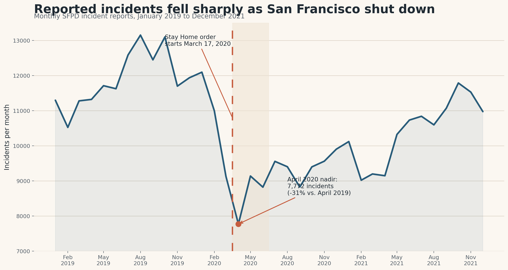

Setup
This story uses San Francisco Police Department incident reports, the same public dataset used throughout the course. Each row is a reported incident with a timestamp, category, police district, and location. For this piece I use 382,616 records from January 1, 2019 through December 31, 2021 to compare the city before and during the first pandemic shock.
One important caveat matters from the start: these are reported incidents, not a direct census of harm or criminal behavior. Reporting patterns, police activity, and changed routines all shape what ends up in the data. So the story below is about how the city's official incident record changed, not a claim that every underlying behavior changed in exactly the same way.
1. The Break
The collapse was immediate
The sharpest visual break in the whole series comes right after the Bay Area shelter-in-place order took effect on March 17, 2020. Incident reports fell to their lowest point in April 2020 and stayed below 2019 levels for the rest of the year.
That does not mean “crime disappeared.” It means the city changed all at once: fewer commuters, fewer tourists, fewer crowded commercial streets, and fewer everyday interactions that typically generate reports.

The citywide drop was large, but it was not evenly distributed. If the pandemic mostly changed how people moved through the city, then the biggest declines should appear in places that depended on office workers, shopping, nightlife, and transit traffic. That is exactly what the map shows.
2. The Geography
Downtown changed more than residential districts
The strongest decline appears in Central, where reported incidents fell by about half compared with the same March-to-August window in 2019. Tenderloin, Mission, and Southern also dropped sharply. By contrast, Bayview and Ingleside changed much less.
The broad pattern is a spatial version of lockdown: the districts most tied to downtown activity lost the most reported incidents, while more residential parts of the city stayed comparatively steady.
A quieter downtown was only part of the story. The mix of incidents also changed. Categories that depend on people carrying property through public space, like larceny theft and lost property, fell hard. Meanwhile burglary and motor vehicle theft rose in many districts, suggesting that the pandemic changed not just where incidents were reported, but also which kinds dominated the record.
3. The Mix
Property crime did not move in one direction
Use the buttons to switch between percent change, net change, and 2020 incident counts. The heatmap makes two patterns easy to spot: larceny and lost-property reports drop across almost every district, while burglary and motor vehicle theft turn positive in much of the city.
This is the most important nuance in the story. The pandemic lowered overall incident volume, but it did not create a uniform decline across offense types.
Takeaway
The simplest reading of the pandemic is that San Francisco got safer because incident reports went down. The data here supports a narrower and more honest claim: the city's incident record was reorganized by a sudden change in mobility, work, and public life. Downtown emptied out, residential patterns mattered more, and some property-related categories rose even while the total fell.
That is why this dataset should be read carefully. A drop in reports can reflect fewer opportunities, less foot traffic, or different policing and reporting patterns. Good data stories do not hide that ambiguity; they make it part of the interpretation.
References
- San Francisco Police Department Incident Reports: 2018 to Present. Source dataset used for the analysis.
- SF.gov, March 18, 2020. Example city guidance issued immediately after the shelter-in-place order, documenting the shift to closed in-person services.
- BART FY21 budget announcement, June 25, 2020. Notes the ridership collapse caused by shelter-in-place orders, consistent with the strong decline in downtown incident activity.